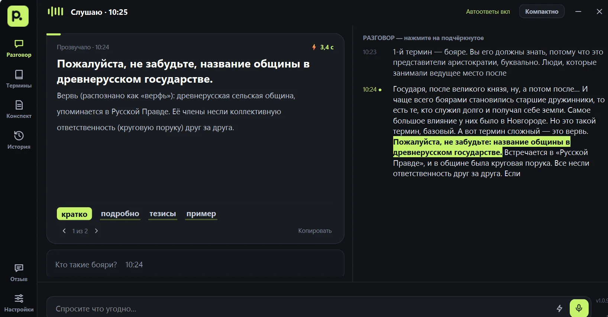

Слышит вопрос —
сразу отвечает
Ponimo слушает звук компьютера, сам находит вопросы в разговоре и за секунду показывает ответ. Не нужно ничего печатать — даже руки поднимать.
Бесплатно в бета-версии · Windows 10 и 11

ChatGPT — ты спрашиваешь.
Ponimo — слышит сам.
Услышал непонятное на созвоне или в видео? Обычно это пять шагов и потерянная нить разговора. С Ponimo — ноль.
Обычный чат с ИИ
- Открыть вкладку
- Вспомнить, что именно сказали
- Напечатать вопрос
- Ждать ответ
- Вернуться — а разговор уже ушёл дальше
Ponimo
Вопрос прозвучал — ответ уже на экране.
Ponimo сам понимает, где в разговоре вопрос, подчёркивает его и отвечает. Ты продолжаешь слушать и не теряешь ни слова.
Как это работает
Три шага, и первые два делает сам Ponimo.
Включи любой звук
Zoom, Meet, Teams, YouTube, подкаст, вебинар. Ponimo слушает звук компьютера и показывает весь разговор текстом.
Вопрос — подчёркнут
ИИ по смыслу находит вопросы — даже без вопросительной интонации — и подчёркивает их в расшифровке.
Ответ — сразу
Ответ появляется слева за секунду. Есть свой вопрос? Напиши или нажми микрофон и спроси голосом.
Где пригодится
Везде, где ты слушаешь и хочешь понимать всё — на любом языке.
Всё, чтобы понимать с первого раза
Окно поверх всех окон, которое не мешает смотреть и слушать.
Ответ так, как удобно
Один клик — и ответ перестроится.
Любой язык
Слушает русский, украинский, английский, польский, немецкий и другие. Отвечает на твоём языке.
Свой вопрос голосом
Нажми лаймовый микрофон и просто спроси. Без клавиатуры.
Термины и конспект
Сложные слова объясняются сами. В конце — конспект всего разговора в один клик.
Компактный режим
Маленькое окно только с ответом. Можно сделать фон прозрачным.
Ничего не записывает
Звук и расшифровка не сохраняются. Сохранить разговор можно только самому, кнопкой.
Вопросы
Это бесплатно?
Да, пока Ponimo в бета-версии — бесплатно. Позже появится платный тариф для тех, кто пользуется много, а базовые возможности останутся бесплатными.
Работает на Mac или телефоне?
Пока только Windows 10 и 11. Версию для Mac планируем.
Windows пишет «Windows защитила ваш компьютер»
Программа новая и ещё без цифровой подписи. Нажмите «Подробнее» → «Выполнить в любом случае». Ponimo устанавливается без прав администратора и обновляется сам.
Нужно ли что-то настраивать?
Нет. Установите, вставьте код доступа и включите любой звук — Ponimo начнёт слушать сам.
Можно ли использовать на экзамене или собеседовании?
Ponimo создан, чтобы понимать то, что вы слышите, а не подсказывать ответы. Не используйте его там, где помощь запрещена правилами.
Что с моими данными?
Звук превращается в текст на лету и не хранится. Подробно — в политике конфиденциальности.
Понимай всё, что слышишь.
Без пауз.
Установка за минуту. Бесплатно в бета-версии.
Скачать Ponimo для Windows